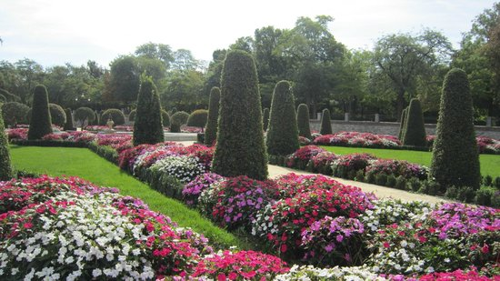
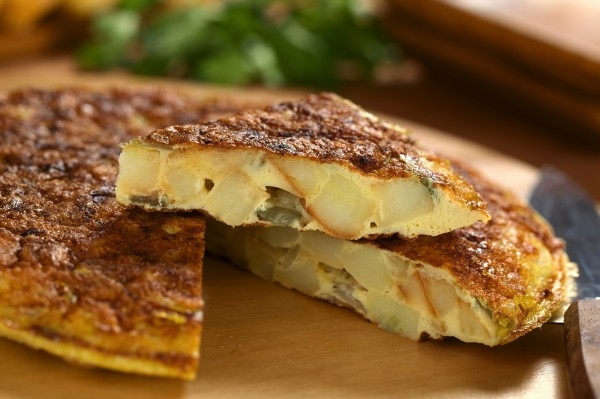
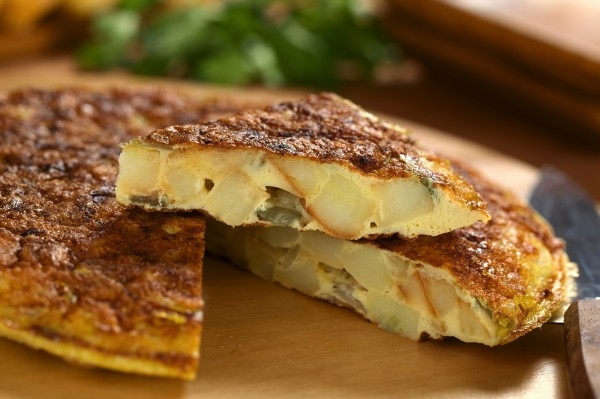
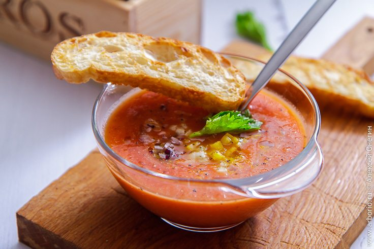
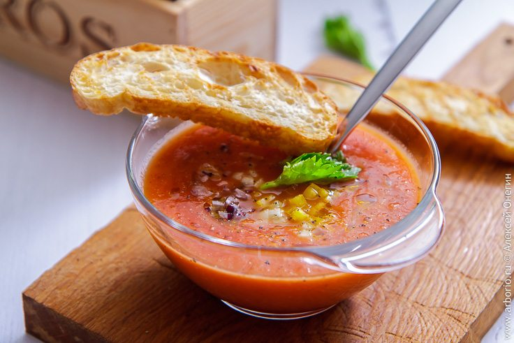

МАДРИД-столиця Іспанії
Мадрид - місто божевільного руху, невичерпної і дивовижної енергії. Місцеві жителі надзвичайно гостинні, а тутешній спосіб життя пов'язаний з розвагами протягом дня і ночі. Як правило, жителі Мадрида лягають спати пізно вночі: вони часто зустрічаються з друзями за обідом або вечерею, а деякі, по закінченню нічного життя, не повертаючись додому, відразу їдуть в офіс. Про столицю Іспанії можна почути цікаві вирази, такі як «Мадрид вбиває мене» і «Мадрид ніколи не спить». Це великий європейський мегаполіс, де танцюють запальні танці, готують смачну їжу і закуски. Кожен тип людей може тут знайти розвагу для себе: любителі мистецтва можуть відвідати три великих музеї (Прадо, Софія і Тіссен). Мадрид - місто різноманітностей! Ознайомимося з 10 місцями, які можна відвідати під час відпочинку в Мадриді.
Що подивитися?
- Музей Прадо є обов'язковим пунктом в екскурсійному списку під час поїздки в Мадрид для будь-якого мандрівника. Саме так категорично. Чому? У цій неокласичній будівлй, збудованій в часи Карла III, сьогодні зібрана найбільша колекція класичного живопису в світі. Щоб побачити шедеври пензля Ель Греко, Дієго Веласкеса, Франсиско Гойї, Босха, Тіциана, Рембрандта, Рубенса, Альбрехта Дюрера та інших геніальних художників, прийти до музею потрібно до 18:00. До речі, по неділях вхід до музею безкоштовний, тому тут ви можете зіткнутися з дуже великими чергами.
В його стінах присутні унікальні роботи: Караваджо;Тіціана;Веласкеса;Босха;Гойя;Рафаеля і багатьох інших знаменитих живописців.Якщо ви хочете відвідати музей, не зазнавши при цьому стресу від натовпу народу і переповнених залів, рекомендуємо вам піти в Прадо в будні дні, коли там не так багато людей або ж заздалегідь купити квиток і потрапити в музей без черги. Усередині музею є кімната невідкладної допомоги, призначена для тих, хто страждає «Синдромом Стендаля». Як дістатися: лінія метро 2, станція «Banco de Espana» або лінія 1, станція «Atocha».
- Ще одна відома і дуже популярна серед туристів площа в Мадриді — Пуерта-дель-Соль. Тут сходяться десять вулиць, тому тут дуже, дуже багатолюдно.
-
Незважаючи на те, що Парк Буен Ретіро був побудований ще в 1640 році, він став відкритим для народу тільки після революції 1868 року, коли сади стали муніципальною власністю. Насправді, парк був створений, як місце для розваг монархії, після того, як герцог Оліварес передав королю Філіпу IV 145 гектарів землі, яка повинна була використовуватися для цієї мети.
Там був побудований Театр Буен Ретіро, де виступали найпопулярніші артисти «золотого століття» (1500-1600). Для проведення елегантних партій, організованих для дворянства, був побудований красивий банкетний зал «Кейсон дель Буена Ретіро». Для виконання заходів і вистав на відкритому повітрі в прекрасних садах були встановлені дві великі клітини: одна - для розміщення деяких видів екзотичних птахів, інша використовувалася в якості сцени для виступу з дикими тваринами.Протягом своєї історії, Парк Буен Ретіро пережив кілька реконструкцій і перетворень, і повільно почав приймати навіть звичайних громадян: завдяки королю Карлу III жителі Мадрида могли прогулюватися там в елегантному одязі.Сьогодні символом парку вважається чудовий Кришталевий палац, який розташований на березі штучного ставку з фонтаном. Він був побудований в 1887 році для проведення величезної виставки, що презентує фауну Філіппінських островів. Будівлю повністю споруджено з металевого каркасу і панелей зі скла. У 1936 році тут проходили вибори Президента, на яких був обраний Мануель Асанья. Де знаходиться: Площа Незалежності (Plaza Mayor). Як дістатися: лінія метро 2, станція «Retiro». Час роботи: палац відкритий з понеділка по суботу з 11 до 20:00. У суботу - з 11 до 18:00. Вхід вільний.
-
Чи можете ви собі уявити, що Пласа Майор була ринковою площею міста до 1580? Раніше це було місце страти, популярних фестивалів і кориди. Між 1600 і 1800 роками територія площі була пошкоджена трьома величезними пожежами. Головна площа (Пласа-Майор) в Мадриді, Іспанія.Сучасний вигляд цієї елегантної площі, яка знаходиться в оточенні триповерхових будівель, є результатом реконструкції старої Плаза-дель-Аррабаль на замовлення Філіпа II Габсбурга, який переїхав в королівський двір в Мадріді в 1561 році.
Перші роботи були довірені Хуану де Еррера, після чого архітектор Гомес де Мора продовжив перетворення площі, надаючи їй стильний вигляд з сучасними кафе і магазинами. У центрі площі розташована величезна статуя Філіпа III на коні.Пласа Майор має 9 шляхів для входу, але найбільш відомим з них є арка Кучільерос, яка веде до вулиці, з такою ж назвою. Арка отримала свою назву від союзу ножових виробників, які обґрунтували тут свої майстерні. На території площі розташована велика будівля - Каса-де-ла-Панадерія з двома вежами, прикрашеними фресками. Як дістатися: лінії метро 1, 2, 3, 5, станція «Puerta del Sol» або лінії 2 і 5, станція «Ópera».
-
Цей монастир, що знаходиться на Plaza de las Descalzas, варто неодмінно включити в свій туристичний маршрут будь-якому гостю Мадрида.Обитель, назва якої перекладається як «монастир босоногих принцес», була заснована в 1559 році інфантою Хуаной Австрійської і славиться не тільки своїм вражаючим внутрішнім оздобленням, а й багатим зібранням предметів мистецтва.
Запитайте, при чому тут мистецтво? Вся справа в тому, що в цей заклад брали в основному жінок знатних іспанських прізвищ і навіть королівської крові, і кожна приносила в дар монастирю своє придане. Ось і зібралася за роки ціла колекція, недарма ж Дескальсас-Реалес у свій час був найбагатшим монастирем Європи! Монастир Дескальсас Реалес - Автор фото Kees de HaanСьогодні він більше схожий на музей, де відвідувачі можуть побачити твори Караваджо, Рубенса, Тиціана та інших метрів, а ще - дивовижні гобелени, мармурові статуї і колекцію виробів зі срібла.Дістатися сюди можна пішки від вокзалу Аточа за півгодини. Цей варіант зручний не тільки тим, що ви заощадите на транспорті, так ще й зможете заглянути по дорозі на Plaza Major, Puerta del Sol, Plaza Descalzas і Plaza de San Martin. Адреса: Plaza de las Descalzas Час роботи: з вівторка по суботу з 10:00 до 14:00 і з 16:00 до 18:30. У неділю і свята - з 10:00 до 15:00. Ціна квитка - € 6 (діти до 5 років - безкоштовно). Варто врахувати, що в монастирі проводять тільки екскурсії з гідом (групи по 20 чоловік) і тільки на іспанському. Екскурсія триває близько 45 хвилин, тому краще приходити сюди раніше, щоб встигнути все побачити.

Що поїсти в Мадриді?
Національна кухня Мадрида має багатовікові традиції. Її основна особливість - успішне поєднання всього найкращого з гастрономії різних іспанських регіонів. Серед найбільш популярних аристократичних страв можна виділити наступні: Місцева їжа: косидо мадріленьо в Мадриді, Іспанія Косідо мадріленьо (наваристий суп, що складається з наступних інгредієнтів: картопля, овочі, м'ясо, свинина, бекон і нут); знамениті «тортілью» (омлет з картоплі, яєць, олії та солі); тапас (маленькі закуски у вигляді бутербродів з овочами, рибою, морепродуктами, які подаються до вина або пива). Яйця, борошно, цукор і мигдаль - основні інгредієнти практично всіх солодощів Мадрида: уесос-де-санто (трубочки з кремом, які готуються з картоплі, мигдалю і вершків); роскільяс-де-Сан-Ісідро (пончики з яєчним білком); чуррос (смажені солодкі пончики з заварного тіста, яке вживається з гарячим шоколадом). Обов’язково слід попробувати традиційну свинину хамон. Її подають в особливих закладах, хамонерах, а процес нарізки та подачі – справжнє мистецтво. Інша особлива страва – холодний томатний суп Гаспаччо. Його можна знайти практично в кожному ресторані. 



 

Де поїсти?
Щоб не помилитись з вибором ресторану, завжди слід іти туди, де зазвичай обідають місцеві жителі. Там точно буде смачно, за адекватну ціну.
Рекомендуємо зїсти десерт в Ballamia Heladeria а обід La Provencita (французька кухня)
Museo Del Jamon – подають смачний хамон з динею, та інші, не менш смачні страви.
Sobrino de Botín – найстаріший ресторан Мадриду було відкрито в 1725 році. Варто скуштувати смажену свинину та баранину.
Для романтиків вартий уваги La Vaca Veronica. Колись тут проводив свої дні Ернест Хемінгуей. Дуже комфортний, затишний заклад.
Дешево і смачно перекусити можна у La Pizzateca, La Pincheria (іспанська кухня)
Покупки в Мадриді
Варто відвідати універмаг Ель корт Інглес, а також численна кількість магазинів є на вулиці Град Віа та Серрано.
Фуенкаррала та Чуека – тут можна знайти велику кількість неординарних магазинів. Крім магазинів, тут є ринок на якому часто показують фільми та спектаклі.
Ринок Сан Мігель
Щоб відчути дух справжнього Мадрида, вирушайте на ринок Сан Мігель, що на Plaza de San Miguel. Тут можна не тільки скуштувати смачні традиційні тапас в одній з численних забігайлівок або накупити місцевих делікатесів, але і зануритися в живу атмосферу міста з його розмаїттям барв, звуків і, звичайно, божественно смачних ароматів! Адреса: Plaza de San Miguel. Час роботи ринку: з четверга по суботу з 10:00 до 02:00, в інші дні - з 10:00 до 00:00. Дістатися сюди можна на метро (лінії 1, 2, 3, станція Puerta del Sol або лінії 2 і 5, станція Opera), а також автобусом №3 і 16.

Кондитерська San Gines
Завершити свій візит в іспанську столицю варто в кращих традиціях мадридців - за чашкою гарячого шоколаду з чуррос, традиційними іспанськими пончиками. І краще для цього місце в Мадриді - кондитерська San Gines.Заснована в 1894 році, кондитерська користується великою популярністю як у місцевих, так і у туристів. Інтер'єр виконаний в класичному стилі кінця XIX століття, з затишними зеленими диванчиками і дзеркалами, до ваших послуг також тихий дворик зі столиками.Через велику кількість відвідувачів приходити сюди краще вранці, коли є вільні місця. Адреса: Pasadizo de San Ginés, 5 (можна дійти пішки від Puerta del Sol). Час роботи: відкрито цілодобово (13:30 - 17:00 перерва).